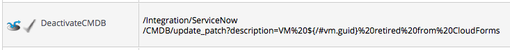
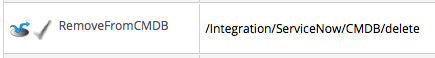
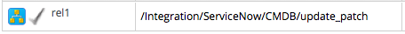

Chapter 1. Overview
Red Hat CloudForms' integration with ServiceNow enables authentication with an existing ServiceNow database and add/amend items in the ServiceNow database during state machine processing, for example, the VM provision state machine. Note that information in this guide assumes you have credentials and access to a ServiceNow database instance.
The following new namespace and class delivers support for the management of ServiceNow Configuration Management Database (CMDB) records using ServiceNow’s RESTful web service.
/RedHat/Integration/ServiceNow/CMDB
You can manage records in the CMDB_CI_SERVER table, including create, update, and/or delete. The following methods are included:
1.1. CMDB_CI_SERVER
| Method | Action | |
|---|---|---|
|
create |
Create record in specified ServiceNow table. | |
|
delete |
Delete record in specified ServiceNow table. | |
|
get |
Get record from specified ServiceNow table and list its attributes. | |
|
get_all |
Get all records in ServiceNow and list attributes. | |
|
update |
Get specified record, update required attributes and post updated record. | |
|
update_patch |
Post required attributes to specified record. |
+ [Note] ======= Configuration item (CI) and record are used interchangeably and refer to items in a ServiceNow database table. ======= + == Managing Record Attributes
You can specify any attribute via the The attributes can be reduced or extended as required by amending the Ruby methods. + [Note] ======= Some attributes are not free-text (variable) fields, that is, they must be specific values. For example, Vendor value must already exist in the ServiceNow Vendor table beforehand. ======= === Create and Update (_patch) Record You can use the following attributes when creating and/or updating a record. ==== Attribute [width="50%"] |
|Attribute |Value |
|virtual |Boolean true or false, set to true. |
|name VM’s |Virtual Infrastructure name. |
|short_description |CloudForms VM GUID. |
|host_name |VM’s Operating System hostname. |
|cpu_count |VM’s CPU count. |
|ram |VM’s memory. |
|vendor |VM’s hardware vendor (provider). |
|sys_id [1] |ServiceNow record unique system ID. |=================================================== |
1.2. Get and Delete Record
You can use the following attribute for getting or deleting a record.
- Attribute
- Value
- sys_id
ServiceNow record unique system ID.
1.3. Get All Records
There are no attributes required to get all records. Method gets all records in the specified ServiceNow table and writes their attributes to automation.log.
Chapter 2. Configuring ServiceNow Connection
Configure the connection to the ServiceNow database by specifying the credentials in the CMDB schema or instances within.
The following methods are included:
2.1. Attribute
| snow_server | ServiceNow database IP address or resolvable hostname. | |
|---|---|---|
|
snow_user |
ServiceNow user account with the necessary permissions. | |
|
snow_password |
Associated user account password. | |
|
table_name |
ServiceNow cmdb_ci_server database table. |
The table name cannot be changed unless there is a specific requirement to manage records elsewhere. Entries in this table appear in the Configuration → Base Items → Servers menu in the ServiceNow web user interface.
== Use Cases See the following use case examples of how ServiceNow can be integrated with automation workflow. === Provision VM from Template The Cloud and Infrastructure Provision VM from Template state machines contain RegisterCMDB and ActivateCMDB states.
To create a new ServiceNow record during VM provisioning, amend the ActiveCMDB state to call the create method, for example: ------- /Integration/ServiceNow/CMDB/create -------
=== VM Retirement The Cloud and Infrastructure Default retirement state machines contain DeactivateCMDB and RemoveFromCMDB states. To update a VM ServiceNow record during VM retirement, amend the DeactivateCMDB state to call the update_patch method, for example: ------- Integration/ServiceNow/CMDB/update_patch?description=VM%20${/#vm.guid}%20retired%20from%20CloudForms ------- 
To delete a VM ServiceNow record during VM retirement, amend the RemoveFromCMDB state to call the delete method, for example: ------- /Integration/ServiceNow/CMDB/delete ------- 
=== VM Reconfiguration (VMware Only) Create a new System Event instance to update the ServiceNow record after a VM reconfiguration request has been approved and completed. Create a new /System/Event/ReconfigVM_Task_Complete instance with a relationship value: ------- /Integration/ServiceNow/CMDB/update_patch -------  |